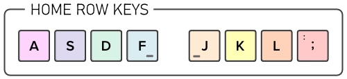

Correct : 0
Display Keyboard
Incorrect : 0
Correct : 0
Incorrect : 0
Characters per Minute : 0
The game designed to enhance and challenge your superhuman typing skills
Place your left index finger on the "F" key and your right index finger on the "J" key. Due to the tiny ridges on their surfaces, these two keys can be recognized without having to look at the keyboard.
Placing your fingers back on the home row while not typing is the first rule of touch typing. You will use the home row as a point of reference to figure out where each key is located.
Learn the remaining letters of the alphabet. Find the location of each letter on the keyboard and press each key with the finger that is closest to it. (Thumbs are exclusively used on the space bar)
Easy - Only uses characters from the Home Key row.
Medium - Use characters from the Home Key row and the row above.
Hard - Includes the characters from easy and medium with the addition of characters from the bottom row.
Select a Difficulty :
This game requires the use of an external keyboard as it explains how to use touch typing and hand placement to increase typing accuracy and speed.
Closing this window will allow you to resume your learning if you are using a computer or tablet with an external keyboard.